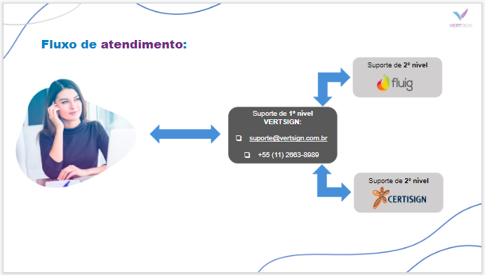
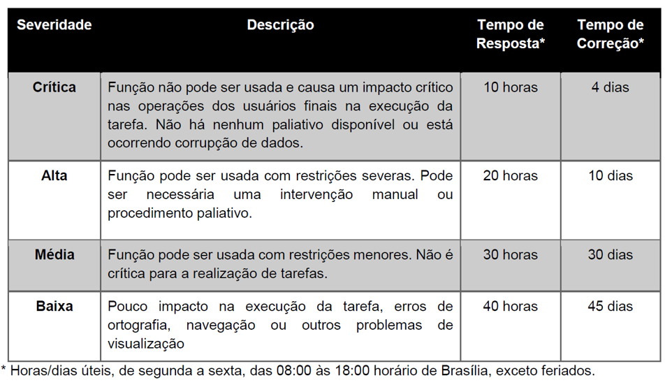

Fluxo de suporte
Suporte de 1º Nível de responsabilidade da VERTSIGN e o suporte 2º Nível de responsabilidade das PARCEIRAS terão as seguintes características:
Modalidades de suporte: email ou atendimento telefônico.Suporte de 1º Nível de responsabilidade da VERTSIGN e o suporte 2º Nível de responsabilidade das PARCEIRAS terão as seguintes características:
Modalidades de suporte: email ou atendimento telefônico.Email: suporte@vertsign.com.br
O e-mail é um dos principais meios de acesso relacionado aos serviços de atendimento. Por meio dele, o Cliente documenta e interagem de maneira formal com o suporte.
Nossa equipe de suporte é orientada a priorizar os atendimentos formalizados via e-mail.
Cliente com pendência financeira poderá ter seu acesso bloqueado no suporte.
O contato com o atendimento ocorrerá por meio de um número único para a produto VERTSIGN. Para suporte ligue +55 (11) 4817-9553. O contato obrigatoriamente deverá ser realizado pelo administrador do sistema por parte do cliente.
Após primeiro contato telefônico, caso necessário, o atendimento será formalizado por e-mail.
Este acesso estará sujeito a confirmação de contrato e pendências financeiras. O sistema validará a situação financeira do cliente. Em caso de pendência financeira, o atendimento será direcionado para a equipe do CST (Centro de Serviços TOTVS), para esclarecimento e regularização.
Cliente que possuir pendência financeira terá seu acesso bloqueado ao suporte. Após a validação dos dados e do contato, será disponibilizada a opção para navegação e atendimento.
É possível acessar o atendimento de forma mais rápida, informando após a validação do contato, o código de acesso gerado automaticamente pelo produto, onde o sistema identificará a área responsável e a ligação será transferida para atendimento.
Dias úteis, de 2ª a 6ª, em horário comercial.
Buscando sempre maior efetividade no atendimento, baseado nos dados informados no Suporte, seja por telefone ou via email, será feita uma classificação da severidade da solicitação.
Esta classificação visa garantir o atendimento dentro de um prazo satisfatório, de acordo com a criticidade do assunto.
A previsão de retorno poderá sofrer alteração após análises efetuadas para a solução do problema e em situações que exijam o envolvimento de outras equipes (equipe de desenvolvimento, consultoria tributária, entre outras).
Prazos estipulados:
